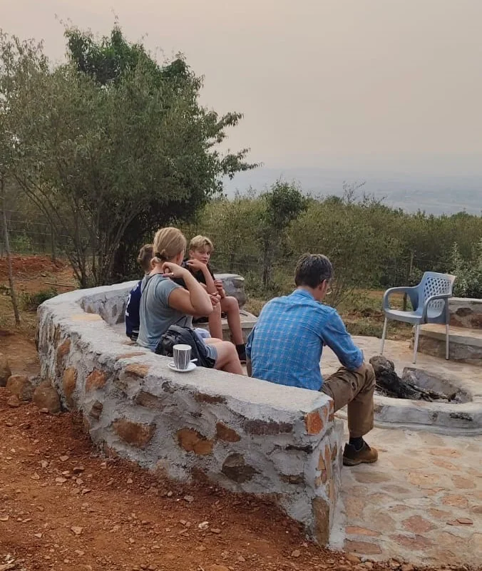

Postcards from the Mara.
Open the gallery and explore the tents, landscapes, shared meals, and moments that make a visit memorable.
LOOK A LITTLE CLOSER
A glimpse of life here.
Browse these moments from Mara Green Heart and Mara adventures. Select any image to see it larger.